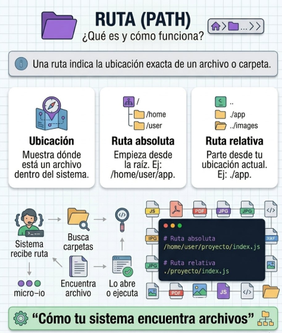

Rutas relativas y organización de carpetas en sitios estáticos

Organizar los archivos por secciones y recursos —como separar cursos, artículos del blog e imágenes en sus propias carpetas— mantiene el proyecto limpio a medida que crece.
Cuando una página está dentro de una subcarpeta, cada ../ sube un nivel en la jerarquía de directorios; revisar este punto en cada vista evita imágenes rotas y enlaces que no llevan a donde toca.